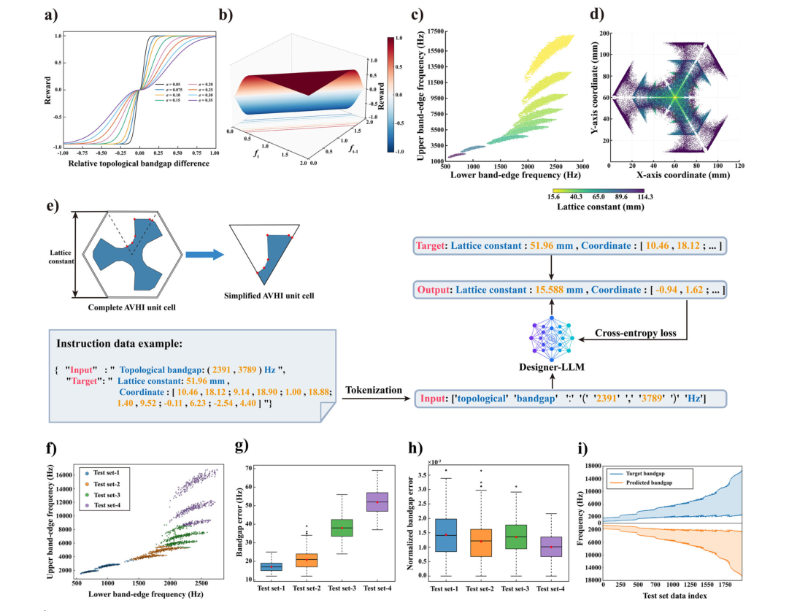

摘要解读
大语言模型驱动的声学谷霍尔绝缘体逆向设计
Large language model-driven inverse design of acoustic valley-Hall insulators
解读更新 2026-10-16 15:38 · 依据公开摘要整理，未核验全文细节
如何把一句声学材料设计需求，转化为满足目标带隙的结构及可供核验的结果？这项研究用协作式大语言模型串联逆向设计与仿真流程，值得关注的是“生成结构”与“组织验证”之间的分工。
文章目录
从目标带隙出发，连接需求与结构
声学谷霍尔绝缘体（AVHI）是一类能够实现稳健定向声波传输的声学拓扑材料，在通信、传感和波操控方面具有应用潜力。本文关注其逆向设计：根据指定的带隙需求生成结构，而不只是给定结构后计算声学响应。
这项工作的切入点不只是结构预测，还包括如何理解用户需求、调用仿真工具并整理输出。摘要将这些环节纳入统一工作流，试图连接自然语言交互与声学超材料设计。
设计模型负责生成，管理模型负责协调
框架由Designer-LLM与Manager-LLM协作组成。研究先通过强化学习生成AVHI数据库，再用该数据库微调Designer-LLM，使其承担面向目标带隙的逆向设计任务。这里需要区分：强化学习用于数据库生成，摘要没有将其描述为直接训练整个语言模型工作流的方法。
Manager-LLM负责协调任务规划、语义解析、仿真工具调用和多模态结果生成。按照摘要的描述，用户提供简洁设计要求后，框架可以生成结构参数、能带结构、本征模态场以及可制造模型文件，将设计与数值核验衔接起来。
协作设计流程与定向声波传输示意

图解：图1｜a展示用户、Manager-LLM、Designer-LLM与仿真及文件输出工具之间的信息流：强化学习生成数据库，数据库用于设计模型的监督微调；管理模型协调需求传递、工具调用和结果反馈。b示意声波从阵列一侧入射，沿不同颜色结构区域之间的弯折界面传播并从另一侧出射。这是框架与传播路径示意，不是传输性能的定量曲线。
原文图注与出处
Fig. 1 | Schematic of the large language model (LLM)-driven inverse-design framework and acoustic wave transport in an acoustic valley-Hall insulator array (AVHI). a Workflow of the proposed LLM-agent framework. The Designer-LLM generates corresponding AVHI structural parameters from specified target band- gaps. The Manager-LLM is responsible for semantic parsing, task planning, and
Wang, Yinchu et al.
原文图页 · CC BY 4.0摘要报告了带隙匹配与多模态输出能力
摘要报告，测试集上的带隙误差分析表明，微调后的Designer-LLM能够生成具有可靠带隙匹配精度的AVHI结构。不过，摘要没有给出具体误差值，因此这里不能进一步量化其精度，也不能据此判断它相对其他设计方法的优势。
另一项成果是工作流整合：语义交互、AVHI逆向设计、数值验证与多模态结果生成被组织进同一模块化框架。输出可制造模型文件，不等于已经证明制造后的性能；摘要提到向其他声学超材料设计任务扩展的参考价值，也不等于已经完成跨任务验证。
数据库构建、模型微调与带隙误差评估


图解：图2｜a比较不同σ下，即时奖励随相邻优化步骤的相对拓扑带隙差变化的关系；b以曲面表示奖励与当前、前一步相对拓扑带隙的关系。c以带隙下边缘频率和上边缘频率为坐标展示数据库分布；d展示平面坐标中的结构点分布，颜色表示晶格常数。e说明完整单胞的简化表示，以及从带隙输入到结构参数目标、分词和交叉熵损失的微调过程。f展示各测试集的带隙边缘频率分布；g、h分别比较带隙误差和归一化带隙误差的分布；i以测试数据索引为横轴、频率为纵轴，对照目标带隙与预测带隙。
原文图注与出处
Fig. 2 | Construction of the acoustic valley-Hall insulator (AVHI) dataset and evaluation of the fine-tuned Designer-LLM. a Variation of the immediate reward with the relative topological bandgap difference between two consecutive optimi- zation steps under different values of σ. b Three-dimensional surface of the immediate reward as a function of the relative topological bandgap values at the current and previous optimization steps. c Distributions of the lower and upper band-edge frequencies of the topological bandgaps in the dataset. d Visualization of
Wang, Yinchu et al.
原文图页 · CC BY 4.0精度结论仍需结合测试与验证边界理解
仅凭摘要，无法判断数据库和测试集的规模、划分方式、结构覆盖范围，以及测试目标与训练数据之间的关系；也无法确认误差指标定义、比较基线和重复验证情况。这些是当前材料未交代的细节，不能据此断言论文没有开展相关工作。
摘要同样不足以判断带隙匹配结论适用于哪些几何约束、材料条件和频率范围，也不足以确认制造偏差下的表现。本文解读限于所提供摘要与原图，不将通信、传感等预期应用表述为已经验证的应用效果。
阅读启发：分别审视生成与核验的职责
阅读启发：对于结构生成式设计，值得继续关注的不是模型能否给出流畅回答，而是目标需求如何转成结构参数，以及生成结果如何接受数值核验。进一步阅读时，可重点核对数据库覆盖、带隙误差定义和工具调用失败的处理方式，从而理解这种模块化分工的适用边界，而不是直接假定它能推广到所有超材料。
以上为本站阅读启发与建议，不是论文已验证的结论。